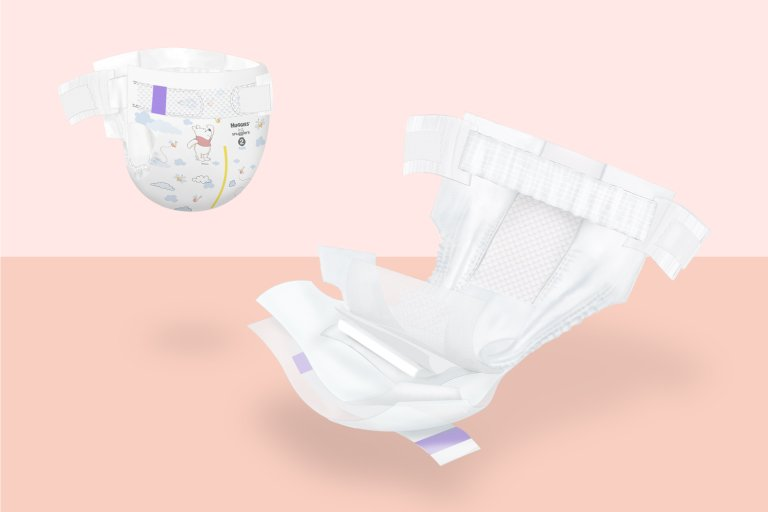

Cloud9 Little-Go-Lucky Diapers ($39.99)
Our diapers are breathable with a pocketed waistband to help prevent blowouts.
Tiny pillows on the gentle liner to help keep baby's skin dry and comfy.
The material is good for newborn babies, in addition to the soft feeling of being in the clouds.
Cloud9 Cotton Candy Diapers ($39.99)
Our diapers are created with a pocketed waistband to help prevent rashes.
There is extra padding and a little pillow to help support the back when lying down.
The material is made with other natural ingredients to help keep the baby's skin dry.
Cute designs are drawn on so that the little one can walk around while strutting its own fashion.
